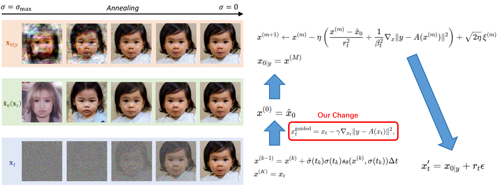
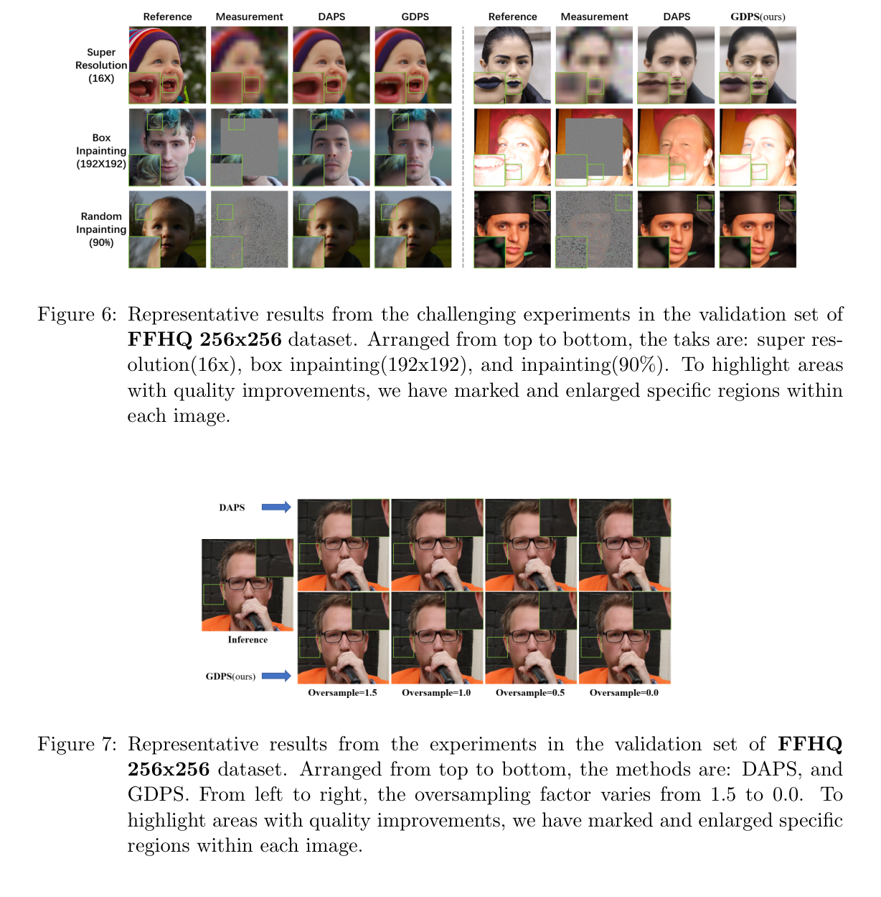
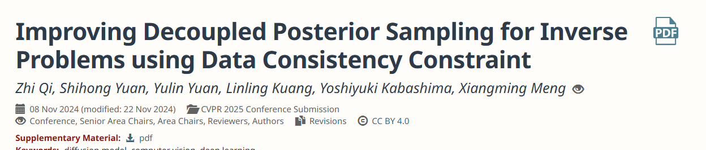

01 项目目的
目标：扩散模型逆问题（给一张模糊图希望得到清晰图），回推采样步骤中加一个 trick，实现稳定的效果提升
课设
目标：扩散模型逆问题（给一张模糊图希望得到清晰图），回推采样步骤中加一个 trick，实现稳定的效果提升
目标：扩散模型逆问题（给一张模糊图希望得到清晰图），回推采样步骤中加一个 trick，实现稳定的效果提升
学习扩散模型算法，学几个逆问题 baseline 的算法
跑对比试验 baseline 8 套
按学长思路尝试修改代码里 resample 部分
大一数学基础不够，学习算法比较缓慢，现在看来还是比较简单。
大一代码了解不多，配置环境，熟悉 pytorch，神经网络代码框架花了很多时间。硬着头皮看，从主程序开始看。
图片 01

图片 02

材料
